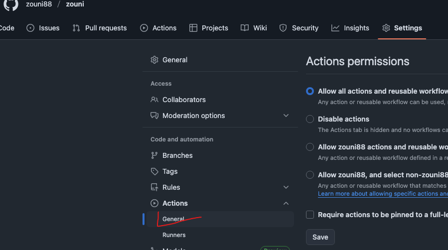
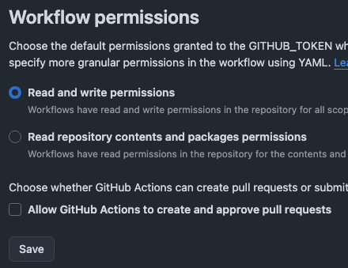
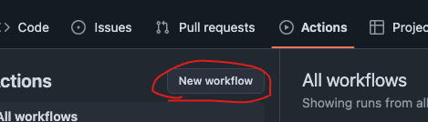
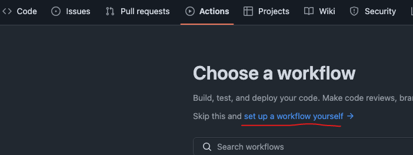
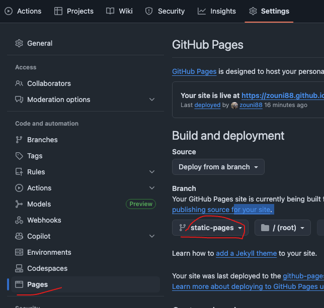

自动部署mdbook到githubpages，流程很简单，如下
1. github创建仓库：zouni
2. 仓库settings -> Actions -> General 下拉找到 Workflow permissions 选中第一项：工作流可读写权限，不勾选工作流没有操作权限


3. 接下来选中Actions,新建workflow,
 
3.1 工作名字+工作流内容
name: Build and Deploy
# 监听 master 分支上的 push 事件
on:
push:
branches:
- main
jobs:
deploy:
# 构建环境使用 ubuntu
runs-on: ubuntu-latest
steps:
# 官方action, 将代码拉取到虚拟机
- name: Checkout
uses: actions/checkout@v3
with:
persist-credentials: false
# 步骤 2：安装 Rust 环境（mdBook 依赖 Rust，官方核心步骤）
- name: Install Rust toolchain
uses: dtolnay/rust-toolchain@stable # 官方推荐的 Rust 安装插件（稳定版）
with:
toolchain: stable # 使用稳定版 Rust（避免 nightly 版本兼容性问题）
# 步骤 3：缓存 Rust 依赖（官方推荐，加速后续构建，减少重复下载）
- name: Cache Rust dependencies
uses: Swatinem/rust-cache@v2 # 官方推荐的 Rust 缓存插件
# 步骤 4：安装 mdBook（工作流环境是全新的，需重新安装，官方步骤）
- name: Install mdBook
run: cargo install mdbook # 与本地安装命令一致，官方标准方式
- name: Build mdBook
run: mdbook build # 官方标准构建命令，生成 HTML/CSS/JS 等静态文件
# 部署
- name: Deploy
uses: JamesIves/github-pages-deploy-action@v4.3.3
with:
# 项目配置的打包目录名称
folder: book
# 部署后提交到的分支
branch: static-pages
4. 完成以上回到Actions会看到工作流已经在运行，等一会儿会自动创建好分支static-pages,接下来重新回到Settings

5. 完成以上，回到Actions,等待工作流运行结束，就可以访问了username.github.io/mysite
参考资料： https://blog.csdn.net/weixin_43233914/article/details/134174562